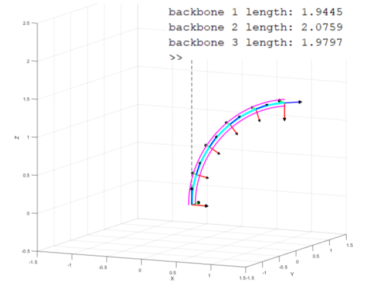
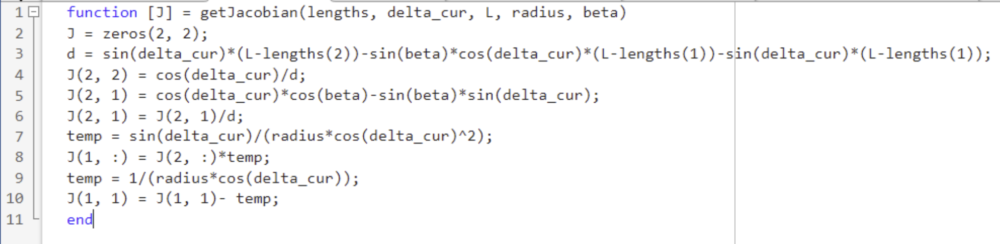
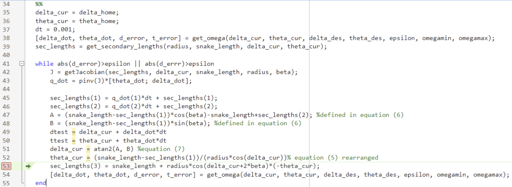
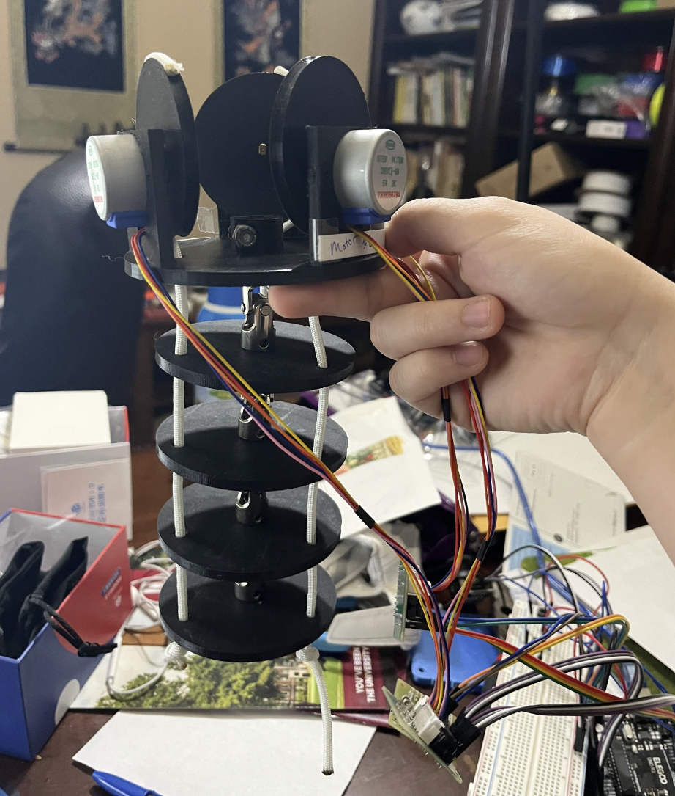
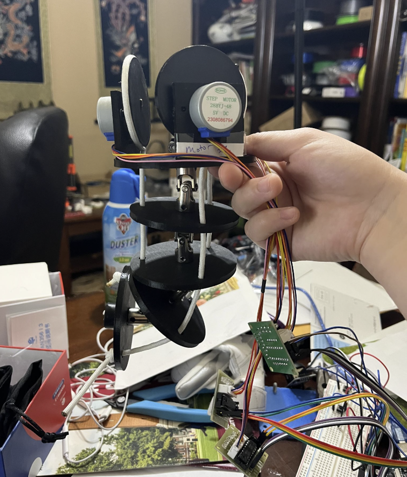

I spent the summer after my junior year at Vanderbilt University's laboratory for Advanced Robotics and Mechanism Applications. Under the grad students' guidance, I had the opportunity to learn about continuum robotics and simulated their motion and kinematics in MATLAB. This project was based on lab director Dr. Nabil Simaan’s 2004 ICRA paper, “A Dexterous System for Laryngeal Surgery.”

The snake-like unit consists of a rigid base disk, a rigid end disk, several equally-spaced spacer disks, and flexible backbones running through them. There is a primary backbone fixed to every disk which defines the segment length. The outer tubes are the secondary backbones, attached only at the end disk and free to slide through the spacer disks. Actuating a secondary backbone by pushing or pulling it changes its arc length relative to the primary backbone, which bends the entire segment.
The spacer disks constrain all backbones to remain equidistant, and the primary backbone is assumed to bend as a circular arc. The end-effector position and segment shape can then be fully determined by just two numbers: a bending angle and a plane angle. This is what makes continuum robots analytically tractable despite having infinite mechanical degrees of freedom.

This was the first time I ever used MATLAB, and also the first time I started to truly appreciate Linear Algebra lol.
The static model was fairly trivial. Compute the actuator lengths given a desired pose (angle $\theta$ from $\hat{z}$ and $\delta$ from the XY plane), and then visualize. The intermediate coordinate frames represent the transformation to the spacer disks' reference frames.
Using equations from the paper:
$$ \theta_L = \theta_0 \frac{L - L_i}{\Delta_i} \quad(5)$$ $$[(L-L_1)\cos(\beta) - (L - L_2)]\cos(\delta l) - [(L - L_1)\sin(\beta)]\sin(\delta l) \quad (6)$$ and then deriving: $$\dot{\theta} = \frac{-L_i}{r\cos(\delta)} + \frac{(L-L_i)\sin(\delta)\dot{\delta}}{r{\cos(\delta)}^{2}}$$ $$\dot{\delta} = \frac{\dot{L_1}\cos(\delta)\cos(\beta) - \dot{L_2}\cos(\delta) - \dot{L_1}\sin(\beta)\sin(\delta)}{(L-L_2)\sin(\delta) - (L - L_1)\sin(\beta)\cos(\delta) - (L - L_1)\sin(\delta)}$$ Defining $\dot{\Psi} = {[\dot{\theta_L}, \dot{\delta}]}^{t}$, you get: $$\dot{\Psi} = \begin{bmatrix} J_{\theta_L q} \\ J_{\delta q} \end{bmatrix}\dot{q} = J_{\Psi q}\dot{q}, \quad J_{\Psi q} = \begin{bmatrix} J_{\theta_L q} \\ J_{\delta q} \end{bmatrix} \quad (11)$$ For simulation, I defined theta = $\theta_0 - \theta_L$ from the paper's notation, so my Jacobian was actually defined $J_{\theta q} = -J_{\theta_L q}$:

And then implemented in a resolved rates loop:

It converges nicely to the desired pose, slowing towards the end of the motion. Maybe I'll find time to get a better video with a clearer desired position, as well as segment length vs time plots, since those calculations are done on the backend and just not shown. TBH I'm not totally sure why I didn't download those videos originally. The simulation was also done with variable parameters for the lab to use as demos. It isn't fixed to 3 secondary linkages- that was just the minimum for full DOF.


Here was a ~24 hour attempt to create a physical model. I scavenged some VEX Robotics parts from my garage, a pack of universal joints, and some crudely printed spacer discs and motor mounts. This was using a super cheap Arduino stepper motor kit with a joystick, but I think it was my first time actually playing around with Arduino.
I've been wanting to make a bigger, better version (I'm writing this 2.5 years after the original project), but my list of project ideas is neverending. Maybe post grad... Pretty crude writeup, but it's a high school project that will go into archives soon. Trying to promise cooler builds in the near future.